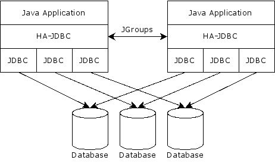

HA-JDBC is a JDBC proxy that enables a Java application to transparently access a cluster of identical databases through the JDBC API.

HA-JDBC has the following advantages over normal JDBC:
HA-JDBC is typically configured via XML file. The full schema definitions for past and present versions of HA-JDBC are enumerated on the XML Schemas page.
The algorithm used to locate the configuration file resource at runtime is as follows:
The general syntax for defining the databases composing an HA-JDBC cluster is as follows:
<ha-jdbc xmlns="urn:ha-jdbc:cluster:2.1">
<cluster>
<database id="..." location="..." weight="#">
<user>...</user>
<password>...</password>
<property name="...">...</property>
<!-- Additional properties -->
</database>
</cluster>
</ha-jdbc>
Defines a set of properties, the semantics of which depend on the cluster access pattern. For Driver-based clusters, these properties are passed to the corresponding call to Driver.connect(String, Properties) method. For DataSource-based clusters, if the database name specified a:
<database id="db1" location="org.postgresql.ds.PGSimpleDataSource">
<property name="serverName">server1</property>
<property name="portNumber">5432</property>
<property name="databaseName">database</property>
</database>
<database id="db1" location="java:comp/env/jdbc/db1">
<property name="java.naming.provider.url">...</property>
</database>
The dialect attribute of a cluster is used to adapt HA-JDBC to a specific database vendor. HA-JDBC includes dialects for the following databases:
| Dialect | Database vendor | Sequences | Identity columns | Dump/restore |
|---|---|---|---|---|
| db2 | IBM DB2 | ✔ | ✔ | |
| derby | Apache Derby | ✔ | ✔ | |
| firebird | Firebird, InterBase | ✔ | ||
| h2 | H2 Database | ✔ | ||
| hsqldb | HSQLDB | ✔ | ||
| ingres | Ingres | ✔ | ||
| maxdb | MySQL MaxDB, SAP DB | ✔ | ||
| mckoi | Mckoi SQL Database | ✔ | ||
| mysql | MySQL | ✔ | ||
| oracle | Oracle Database | ✔ | ||
| postgresql | PostgreSQL | ✔ | ✔ | ✔ |
| sybase | Sybase | ✔ | ||
| standard | SQL-92 compliant database |
e.g.
<ha-jdbc xmlns="urn:ha-jdbc:cluster:2.1">
<cluster dialect="postgresql">
<!-- ... -->
</cluster>
</ha-jdbc>
When executing a read request from the cluster, HA-JDBC uses the configured balancer strategy to determine which database should service the request. Each database can define a weight to affect how it is prioritized by the balancer. If no weight is specified for a given database, it is assumed to be 1.
N.B. In general, a node with a weight of 0 will never service a request unless it is the last node in the cluster.
By default, HA-JDBC supports 4 types of balancers:
e.g.
<ha-jdbc xmlns="urn:ha-jdbc:cluster:2.1">
<cluster balancer="simple">
<!-- Read requests will always prefer db1 -->
<database id="db1" location="..." weight="2"><!-- ... --></database>
<database id="db2" location="..." weight="1"><!-- ... --></database>
</cluster>
</ha-jdbc>
Defines a strategy for synchronizing a database before activation. A cluster may define multiple synchronization strategies, however, one of them must be designated as the default-sync. The default synchronization strategy is used when synchronization is triggered by auto-activation. The others are only used during manual database activation.
HA-JDBC supports the following strategies by default. As of version 2.1, synchronization strategies are defined by identifier alone, not by class name. If the strategy exposes any JavaBean properties, these can be overridden via nested property elements.
| Property | Default | Description |
|---|---|---|
| fetchSize | 0 | Controls the maximum number of rows to fetch from the source database at a time. |
| maxBatchSize | 100 | Controls the maximum number of insert/update/delete statements to execute within a batch. |
| Property | Default | Description |
|---|---|---|
| versionPattern | Specifies a regular expression matching the column name of a last update timestamp (i.e. version) column. If specified, a version comparison column can be used to determine whether a given row requires updating, instead of a full column scan. | |
| fetchSize | 0 | Controls the maximum number of rows to fetch from the source database at a time. |
| maxBatchSize | 100 | Controls the maximum number of insert/update/delete statements to execute within a batch. |
e.g.
<ha-jdbc xmlns="urn:ha-jdbc:cluster:2.1">
<sync id="full">
<property name="fetchSize">1000</property>
</sync>
<sync id="diff">
<property name="fetchSize">1000</property>
<property name="versionPattern">version</property>
</sync>
<cluster default-sync="diff"><!-- ... --></cluster>
</ha-jdbc>
The state manager component is responsible for storing the active status of each database in the cluster, as well as any durability state. During startup, HA-JDBC fetches its initial cluster state is fetched either from another server, if HA-JDBC is configured to be distributable, or if the configured state manager is persistent. If no state is found, all accessible databases are presumed to be active. To ignore (i.e. clear) the locally persisted cluster state at startup, start HA-JDBC using the ha-jdbc.state.clear=true system property.
HA-JDBC includes the following state manager implementations:
A non-persistent state manager that stores cluster state in memory.
e.g.
<ha-jdbc xmlns="urn:ha-jdbc:cluster:2.1">
<state id="simple"/>
<cluster><!-- ... --></cluster>
</ha-jdbc>
A persistent state manager that uses an embedded database. This provider supports the following properties, in addition to properties to manipulate connection pooling behavior. The complete list of pooling properties and their default values are available in the Apache Commons Pool documentation documentation.
| Property | Default | Description |
|---|---|---|
| urlPattern | jdbc:h2:{1}/{0} jdbc:hsqldb:{1}/{0} jdbc:derby:{1}/{0};create=true |
A MessageFormat pattern indicating the JDBC url of the embedded database. The pattern can accept 2 parameters:
|
| user | Authentication user name for the embedded database. | |
| password | Authentication password for the above user. |
<ha-jdbc xmlns="urn:ha-jdbc:cluster:2.1">
<state id="sql">
<property name="urlPattern">jdbc:h2:/temp/ha-jdbc/{0}</property>
</state>
<cluster><!-- ... --></cluster>
</ha-jdbc>
A persistent state manager that uses a BerkeleyDB database. This provider supports the following properties, in addition to properties to manipulate connection pooling behavior. The complete list of pooling properties and their default values are available in the Apache Commons Pool documentation documentation..
| Property | Default | Description |
|---|---|---|
| locationPattern | {1}/{0} | A MessageFormat pattern indicating the base location of the embedded database. The pattern can accept 2 parameters:
|
<ha-jdbc xmlns="urn:ha-jdbc:cluster:2.1">
<state id="berkeleydb">
<property name="locationPattern">/tmp/{0}</property>
</state>
<cluster><!-- ... --></cluster>
</ha-jdbc>
A persistent state manager that uses a SQLite database. This provider supports the following properties, in addition to properties to manipulate connection pooling behavior. The complete list of pooling properties and their default values are available in the Apache Commons Pool documentation documentation.
| Property | Default | Description |
|---|---|---|
| locationPattern | {1}/{0} | A MessageFormat pattern indicating the base location of the embedded database. The pattern can accept 2 parameters:
|
<ha-jdbc xmlns="urn:ha-jdbc:cluster:2.1">
<state id="sqlite">
<property name="locationPattern">/tmp/{0}</property>
</state>
<cluster><!-- ... --></cluster>
</ha-jdbc>
As of version 2.1, HA-JDBC support a configurable durability level for user transactions. When enabled, HA-JDBC will track transactions, such that, upon restart, following a crash, it can detect and recover from any partial commits (i.e. where data was not . The durability persistence mechanism is determined by the state manager configuration. By default, HA-JDBC includes support for the following durability levels:
e.g.
<ha-jdbc xmlns="urn:ha-jdbc:cluster:2.1">
<cluster durability="fine">
<!-- ... -->
</cluster>
</ha-jdbc>
Indicates that database clusters defined in this file will be accessed by multiple JVMs. By default, HA-JDBC supports the following providers:
| Property | Default | Description |
|---|---|---|
| stack | udp-sync.xml | Defines one of the following:
|
| timeout | 60000 | Indicates the number of milliseconds allowed for JGroups operations. |
e.g.
<ha-jdbc xmlns="urn:ha-jdbc:cluster:2.1">
<distributable id="jgroups">
<property name="stack">udp.xml</property>
</distributable>
<cluster><!-- ... --></cluster>
</ha-jdbc>
HA-JDBC makes extensive use of database meta data. For performance purposes, this information should be cached whenever possible. By default, HA-JDBC includes the following meta-data-cache options:
e.g.
<ha-jdbc xmlns="urn:ha-jdbc:cluster:2.1">
<cluster meta-data-cache="shared-eager">
<!-- ... -->
</cluster>
</ha-jdbc>
Since HA-JDBC’s configuration file contains references to database passwords, some users may want to obfuscate these. To indicate that a password uses an obfuscation mechanism, use a “:” to indicate the appropriate decoder.
e.g.
<ha-jdbc xmlns="urn:ha-jdbc:cluster:2.1">
<cluster ...>
<database id="db1" location="jdbc:mysql://server:port/db1">
<user>admin</user>
<password>?:wzAkF0hlYUeGhfzRQIxYAQ==</password>
</database>
<database id="db2"><!-- ... --></database>
</cluster>
</ha-jdbc>
The following decoding mechanism are currently supported:
Decodes passwords using a symmetric encryption key from a keystore. The following system properties can be used to customize the properties of the key and/or keystore:
| System property | Default value |
|---|---|
| ha-jdbc.keystore.file | $HOME/.keystore |
| ha-jdbc.keystore.type | jceks |
| ha-jdbc.keystore.password | none |
| ha-jdbc.key.alias | ha-jdbc |
| ha-jdbc.key.password | required |
java -classpath ha-jdbc.jar net.sf.hajdbc.codec.crypto.CipherCodecFactory [password]
Most applications that write information to a database require some kind of primary key generation mechanism. Databases typically provide 2 mechanisms for doing this, both of which are supported by HA-JDBC (if the configured dialect supports it): database sequences and identity (i.e. auto-incrementing) columns.
It is important to note the performance implications when using sequences and/or identity columns in conjunction with HA-JDBC. Both algorithms introduce per statement regular expression matching and mutex costs in HA-JDBC, the latter being particularly costly for distributed environments. Because of their performance impact, support for both sequences and identity columns can be disabled via the detect-sequences and detect-identity-columns cluster attributes, respectively.
e.g.
<ha-jdbc xmlns="urn:ha-jdbc:cluster:2.1">
<cluster detect-sequences="false" detect-identity-columns="false">
<!-- ... -->
</cluster>
</ha-jdbc>
Fortunately, the performance penalty for sequences can be mitigated via what Hibernate calls a Sequence-HiLo algorithm.
For best performance, HA-JDBC recommends using a table-based high-low or UUID algorithm so that statement parsing and locking costs can be avoided. Object-relation mapping (ORM) frameworks (e.g. Hibernate, OpenJPA, etc.) typically include implementations of these mechanisms.
HA-JDBC supports a number of extension points. Most components support custom implementations, including:
In general, to configure HA-JDBC with a custom component:
e.g.
package org.myorg;
public class CustomDialectFactory implements net.sf.hajdbc.dialect.DialectFactory {
@Override
public String getId() {
return "custom";
}
@Override
public net.sf.hajdbc.dialect.Dialect createDialect() {
return new StandardDialect() {
// Override methods to customize behavior
};
}
}
META-INF/services/net.sf.hajdbc.dialect.DialectFactory
org.myorg.CustomDialectFactory
ha-jdbc.xml
<ha-jdbc xmlns="urn:ha-jdbc:cluster:2.1">
<cluster dialect="custom" ...>
<!-- ... -->
</cluster>
</ha-jdbc>
As of version 2.1, an HA-JDBC cluster can be configured programmatically.
e.g.
// Define each database in the cluster
DriverDatabase db1 = new DriverDatabase();
db1.setId("db1");
db1.setLocation("jdbc:hsqldb:mem:db1");
db1.setUser("sa");
db1.setPassword("");
DriverDatabase db2 = new DriverDatabase();
db2.setId("db2");
db2.setLocation("jdbc:hsqldb:mem:db2");
db2.setUser("sa");
db2.setPassword("");
// Define the cluster configuration itself
DriverDatabaseClusterConfiguration config = new DriverDatabaseClusterConfiguration();
// Specify the database composing this cluster
config.setDatabases(Arrays.asList(db1, db2));
// Define the dialect
config.setDialectFactory(new HSQLDBDialectFactory());
// Don't cache any meta data
config.setDatabaseMetaDataCacheFactory(new SimpleDatabaseMetaDataCacheFactory());
// Use an in-memory state manager
config.setStateManagerFactory(new SimpleStateManagerFactory());
// Make the cluster distributable
config.setDispatcherFactory(new JGroupsCommandDispatcherFactory());
// Register the configuration with the HA-JDBC driver
net.sf.hajdbc.sql.Driver.setConfigurationFactory("mycluster", new SimpleDatabaseClusterConfigurationFactory<java.sql.Driver, DriverDatabase>(config));
// Database cluster is now ready to be used!
Connection connection = DriverManager.getConnection("jdbc:ha-jdbc:mycluster", "sa", "");
Application access an HA-JDBC cluster either via the Driver or DataSource.
To access a specific cluster via the Driver, HA-JDBC must be configured to access your databases accordingly.
e.g.
ha-jdbc-mycluster.xml
<ha-jdbc xmlns="urn:ha-jdbc:cluster:2.1">
<cluster>
<database id="db1" location="jdbc:postgresql://server1:port1/database1">
<user>pgadmin</user>
<password>password</password>
</database>
<database id="db2" location="jdbc:postgresql://server2:port2/database2">
<user>pgadmin</user>
<password>password</password>
</database>
</cluster>
</ha-jdbc>
HA-JDBC connection can then be established via the appropriate JDBC URL:
java.sql.Connection connection = java.sql.DriverManager.getConnection("jdbc:ha-jdbc:mycluster", "user", "password");
To access a specific cluster via a DataSource, HA-JDBC must be configured to access your databases via DataSources. HA-JDBC provides a DataSource, ConnectionPoolDataSource, and XADataSource implementations, depending on which resource you plan to proxy.
e.g.
ha-jdbc-mycluster.xml
<ha-jdbc xmlns="urn:ha-jdbc:cluster:2.1">
<cluster>
<database id="db1" location="org.postgresql.ds.PGSimpleDataSource">
<user>pgadmin</user>
<password>password</password>
<property name="serverName">server1</property>
<property name="portNumber">5432</property>
<property name="databaseName">database</property>
</database>
<database id="db2" location="org.postgresql.ds.PGSimpleDataSource">
<user>pgadmin</user>
<password>password</password>
<property name="serverName">server2</property>
<property name="portNumber">5432</property>
<property name="databaseName">database</property>
</database>
</cluster>
</ha-jdbc>
To deploy the HA-JDBC DataSource in Tomcat, for example:
context.xml
<Context>
<!-- ... -->
<Resource name="jdbc/mycluster" type="net.sf.hajdbc.sql.DataSource"
factory="org.apache.naming.factory.BeanFactory"
closeMethod="stop"
cluster="mycluster"
config="file:///path/to/ha-jdbc-mycluster.xml"/>
<!-- ... -->
</Context>
To make the DataSource referenceable from your application:
web.xml
<web-app>
<!-- ... -->
<resource-env-ref>
<resource-env-ref-name>jdbc/mycluster</resource-env-ref-name>
<resource-env-ref-type>javax.sql.DataSource</resource-env-ref-type>
</resource-env-ref>
<!-- ... -->
</web-app>
You can then access the cluster via:
javax.naming.Context context = new javax.naming.InitialContext();
javax.sql.DataSource ds = (javax.sql.DataSource) context.lookup("java:comp/env/jdbc/mycluster");
java.sql.Connection connection = ds.getConnection("user", "password");
Database reads (e.g. SELECT statements) are handled using the following algorithm:
Alternatively, database writes can be configured to execute against both the master and backup databases concurrently. While this will result in better performance, it will cause deadlocking if multiple application threads attempt to update the same database row. If your use case is compatible with this limitation, you can enable parallel writes via the transaction-mode attribute.
e.g.
<ha-jdbc xmlns="urn:ha-jdbc:cluster:2.1">
<cluster transaction-mode="parallel">
<!-- ... -->
</cluster>
</ha-jdbc>
By default, database writes (e.g. INSERT/UPDATE/DELETE statements) are handled using the following algorithm:
To determine whether a given exception is due to a database failure, we consult the configured dialect. The default implementation returns the following:
Any dialect can override this behavior, perhaps by inspecting vendor codes, SQL states, etc.
If HA-JDBC determines that a given database has failed, the database is deactivated. The process of deactivating a database is as follows:
Databases can also be deactivated manually via JMX.
You can optionally configure HA-JDBC to proactively detect database failures via the failure-detect-schedule attribute. The value of this attribute defines a cron expression, which specifies the schedule a database cluster will detect failed databases and deactivate them.
e.g.
<ha-jdbc xmlns="urn:ha-jdbc:cluster:2.1">
<!-- Failure detection will run every minute -->
<cluster failure-detect-schedule="0 * * ? * *">
<!-- ... -->
</cluster>
</ha-jdbc>
The process of (re)activating a database is as follows:
In general, database synchronization is an intensive and intrusive task. To maintain database consistency, each database node in the cluster is read locked (i.e. writes are blocked) until synchronization completes. Since synchronization may take anywhere from seconds to hours (depending on the size of your database and synchronization strategy employed), if your database cluster is used in a high write volume environment, it is recommended that activation only be performed during off-peak hours.
Alternatively, HA-JDBC can attempt to activate any inactive databases automatically via the auto-activate-schedule attribute. If specified, HA-JDBC will automatically attempt to activate database nodes that are inactive, but alive, according to the specified cron schedule.
e.g.
<ha-jdbc xmlns="urn:ha-jdbc:cluster:2.1">
<!-- Auto-activation will run every day at 2:00 AM -->
<cluster auto-activate-schedule="0 0 2 ? * *">
<!-- ... -->
</cluster>
</ha-jdbc>
By default, database clusters are registered with the platform mbean server using the following object name:
net.sf.hajdbc:type=DatabaseCluster,cluster=cluster-id